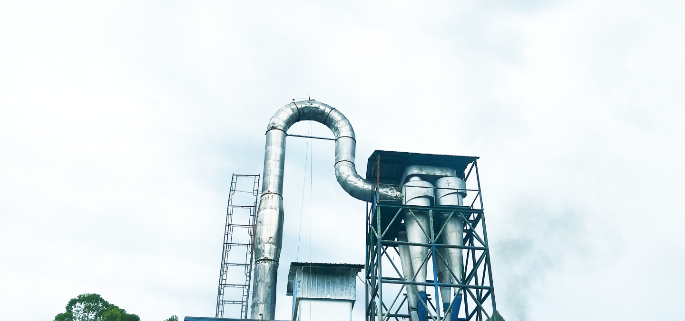

PT. HUTAHAEAN PABRIK TAPIOKA
Jl. Indorayon, Pintubosi, Laguboti, Toba, North Sumatera, 22381-Indonesia.
Company History
The owner of PT. Hutahaean Pabrik Tapioka is Mr. St. HARANGAN WILMAR HUTAHAEAN, known by the nickname Mr. Hutahaean or OPPUNG. Every time OPPUNG return to the village in Laguboti namely village Simatibung, some of the parents convey to OPPUNG by saying “Holan luat /huta ni halak nama bangunonmu op.Gora? Ndang pingkiran mu be huta ta on? Asa boi mangan piga-piga halak?” Hearing the case that, OPPUNG just smiled.

Then at a time , OPPUNG meet Subdistrict Laguboti that when it was headed by Mr. Mangapul Hutajulu and discuss with him . He said that efforts were suitable area Toba This is the business of agriculture . At that time , the Regent of Toba Regency, which was held by Mr. Monang Sitorus, held a program the cultivation of corn , So in the District Borbor right her in the village of Natumingka began the processing of land for planting corn . In the year 2008 conducted a ceremony of planting the inaugural crop of corn in the village Natumingka which was attended by the Regent Toba namely Mr. Monang Sitorus and officials of other . Over the passage of time , due to the condition of the land is less support then the corn into a dwarf so happens failed harvest . So OPPUNG immediately leave the program planting of corn that , but the Regent Toba when it beg in order not to give up and look for plants that is more suited to the land of the . Then suggested is the plant yam timber .
Then OPPUNG think that plant potatoes timber is suitable , for potato timber suitable for food everyday and food animals . So that by thinking OPPUNG may grow potatoes timber that can be managed . Then began planting sweet potatoes in Natumingka Village, which is planned to cover an area of more than 200 hectares . OPPUNG thought that if this sweet potato had been harvested , where would it be taken ? Without thought long OPPUNG decided to build a factory Tapioca to accommodate the marketing of the are potatoes . Then in the year 2009 began the work of building a plant tapioca in the village of Pintubosi while waiting yam harvest . Because the process of development has not been completed , then the partial results of the harvest potatoes are sold to Pematang Siantar . In the year 2010 the construction of the plant has been completed then the plant began operating .